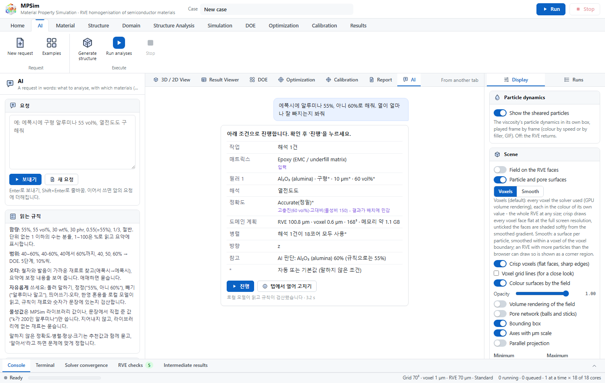
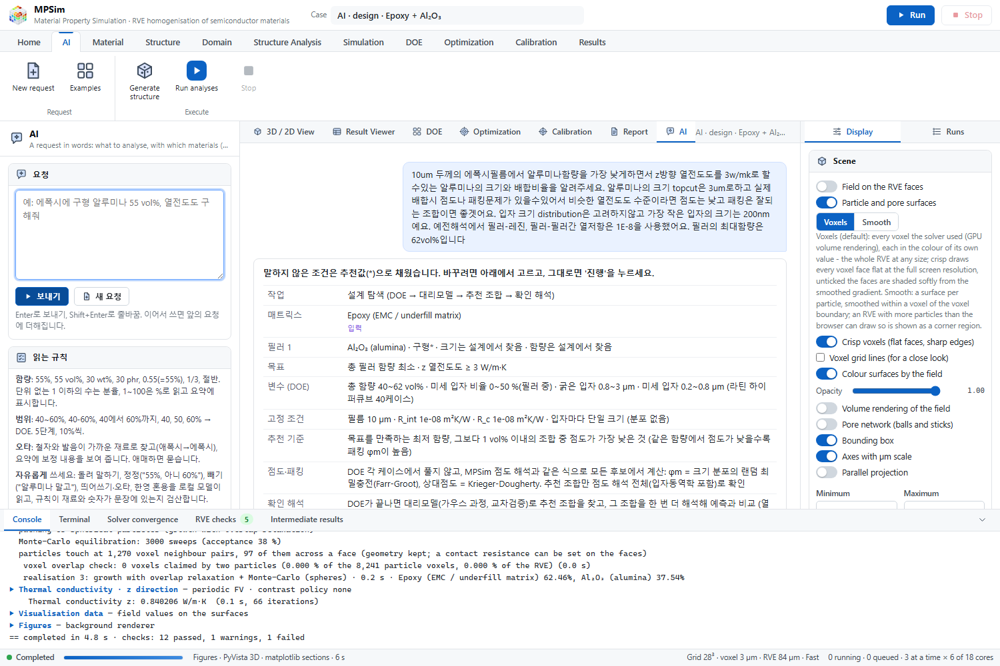
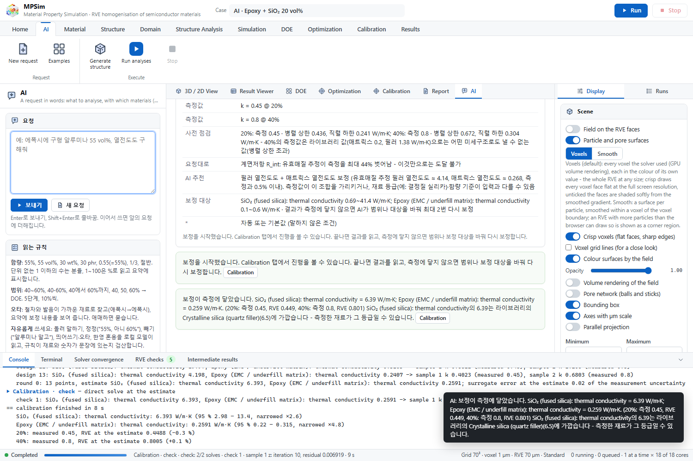
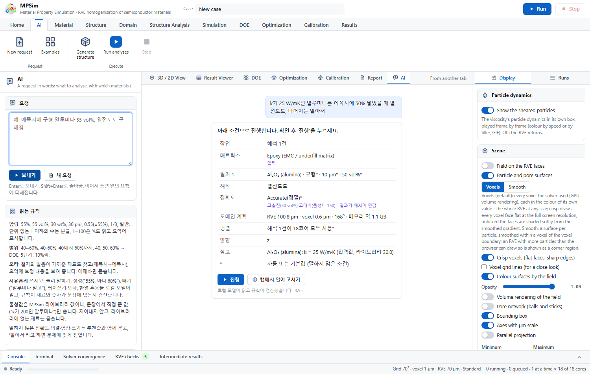

AIMPSim · MPSim with requests in words
Type the case the way you would say it - roundabout, corrected halfway, misspelt, Korean and English mixed. A small language model reads it on your PC, rules check every material and number against the sentence, and the summary shows what MPSim will run before anything runs.

How a request is read
AIMPSim is MPSim with an AI tab between Home and Material. The analyses, solvers, checks and guides are MPSim's; AIMPSim turns a sentence into an MPSim case - a run, a DOE study, a calibration or an optimisation.
The model reads
A local language model reads the whole request - a follow-up together with the request so far - into a fixed form: materials, contents, sizes, material values, analyses, the task and the settings.
The rules check
Every material must be named in the sentence and every number must be in it, or follow from its numbers by a calculation that is shown. What the rules read from explicit words (shapes, sizes with units, ranges, measured values) stands.
The summary asks
The summary lists what was read, calculated or corrected and where the model and the rules differ. What only you can give is asked; the rest comes with a recommended answer, or "decide for me".
MPSim runs it
Run starts it in MPSim - the input validated and its RVE planned by MPSim itself - or the case opens in MPSim's tabs to be edited by hand.
Write freely
The requests below are read as shown (Korean examples as typed). Nothing has to follow a template.
| Request | Read as |
|---|---|
| 에폭시에 알루미나 반 정도 섞으면 열이 얼마나 잘 빠질까? | alumina 50 % in epoxy · thermal conductivity |
| epoxy with alumina, 55%, actually make that 60%, thermal conductivity | 60 % (the correction) |
| 알루미나는 아니고 질화붕소를 에폭시에 30% 넣은 경우 열전도도 | boron nitride only |
| 열전도도는 필요없고 CTE만 봐줘, 에폭시에 실리카 50% | CTE only |
| TIM 용도로 실리콘에 질화알루미늄 70% 넣을 건데 성능 괜찮을까 | thermal conductivity, from the purpose |
| 에폭시에알루미나55%넣고열전도도구해줘 | no spaces needed |
| epoxy에 alumina 55vol% 넣어서 thermal conductivity 계산해줘 | Korean and English mixed |
| 에폭씨에 시리카 오십퍼 유젼율 | silica 50 % in epoxy · permittivity (typing errors, spoken numbers) |
| silcone with 50% alumnia, thermal | silicone, alumina - by spelling and sound |
| 실리콘 200g, 질화붕소 50g 넣으면 열전도도 얼마 | 20 wt%, the calculation shown |
| 에폭시랑 알루미나 비율을 4대6으로 해서 열전도도 | 60 %, the calculation shown |
| k가 25 W/mK인 알루미나를 에폭시에 50% 넣었을 때 열전도도 | alumina k = 25 over the library's 30, both shown |
| BN 판상인데 지름 20마이크로 두께 1마이크로, 실리콘에 30% 열전도 | platelets 20 µm × 1 µm |
| 에폭시에 알루미나를 40에서 60까지 바꿔가며 열전도도 어떻게 변하나 보고싶어 | a DOE study, 40 - 60 % |
| 에폭시 알루미나 40%에서 1.1, 60%에서 2.3 W/mK 나왔어. 맞춰줘 | a calibration to two measurements |
| 알루미나랑 질화붕소 중에 에폭시에 30% 넣었을 때 어느 쪽이 열전도도 더 높은지 비교해줘 | asked: each on its own (two runs), never one mixture |
| 열전도도랑 CTE 둘 다 궁금한데, 에폭시에 알루미나를 절반보다 살짝 많이 넣은 경우야 | asked: "a bit more than half" is not a number |
Design requests and calibrations
A request can name a target and ask what to use; a calibration is checked before it runs and revisited when it does not reach the data.
The least filler for a target
- "10um 에폭시 필름에서 알루미나를 가장 적게 넣고 z방향 열전도도 3 W/mK가 되는 크기와 배합비율, topcut 3um, 가장 작은 입자 200nm, 최대 62vol%, 비슷하면 점도 낮고 패킹 잘되는 조합"
- A DOE over the total content, coarse and fine size and the fine share (40 cases), the film, R_int and R_c fixed
- A Gaussian-process surrogate gives the lowest content that meets the target; of the recipes within 1 vol%, the lowest viscosity (Farr-Groot packing, Krieger-Dougherty) is recommended
- Round by round until it answers: where the surrogate cannot yet fix the content within 1 vol%, the points that settle it are added to the study; then the recipe is checked with three realisations, until the check meets the target. "멈춰" stops it; a condition you type applies from the next round
Checked before, revisited after
- Measurements against the parallel and series bounds and MPSim's effective-medium preview, for each set of unknowns: what cannot reach the data is said, and the set that can is recommended
- "실리카 20%일 때 0.45, 40%일 때 0.8 W/mK, 계면저항 보정": 0.8 lies above the parallel bound with fused silica (0.67); the filler and matrix conductivities reach it (silica 6.39 - the library's crystalline silica, 6.5)
- Until it reaches the data: ranges widened while the estimate sits at their end, the other unknowns tried; when nothing is left to change, you are asked - another grade of the filler, wt% or vol%, or stop
Run until the optimum is checked
- "함량 30~55%, 크기 5~30um로 바꿔가며 열전도도 최대 조건": a DOE of 25 cases, then rounds
- While the surrogate cross-validates below R² 0.8, points go where it is least sure; then where improvement is expected (Jones, Schonlau and Welch 1998), until it falls below 1 % of the range
- The predicted optimum is run as one more case and stands when the run gives what was predicted; otherwise the search goes on with it
Designs, studies and calibrations
- Several targets met at once ("유전율 3.0 이하이면서 CTE 30 ppm/K 이하"), each with its own surrogate
- Three sizes said one by one, a range for each size class ("대입자 20~70um과 소입자 0.5~5um"), the lowest viscosity as the goal, a value to meet, wt% throughout
- Electrical conductivity fitted as its logarithm across percolation
- Calibrations of CTE, permittivity, modulus and electrical conductivity; measurements written as lists ("40, 50, 60vol%에서 각각 0.9, 1.4, 2.3 W/mK")
For one request
- "알루미나 열전도도 20으로", "라이브러리보다 10 낮게", "30% 높게", "절반으로"
- The value goes into this case's phase and name; the material library is not changed, and the next request starts from it again


Nothing is made up
The model's answer is a reading to be checked, never a fact. Whatever fails a check is dropped and asked for; the summary says what was dropped and why.
Named in the sentence
- As written, by spelling or by sound - a material the model brought in itself is dropped
- A longer, more specific name wins (crystalline silica is quartz, not silica)
- A word that names several materials (silicone or silicon, which glass) is read by its role, or asked
In the sentence, or shown
- Every number is said, or follows from the sentence's numbers by a calculation the summary shows: 4:6, grams and parts, nm to µm, half, a quarter
- A vague amount is asked, never guessed
- Sizes need a unit or a size word; a spread needs a spread word
Yours or the library's
- A value you give (k, E, CTE, permittivity) is used over the library's, both shown
- A value the model knows from elsewhere is never used
- A material the library lacks is asked about
Pointed to by a word
- Named, described ("will it flow") or implied by a purpose ("for a TIM")
- An analysis the sentence gives no reason for is asked
Corrections win
- "55%, no, 60%", "not alumina", "skip the thermal part", "BN은 빼고": the model's reading of what was taken back stands
- Otherwise what the rules read exactly and the model left out comes back
The rules read alone
- No model, a model that does not answer, or
{"llm": "off"}: the rules read the request as in 0.1 - A broken answer never stops the tab

A material value given in the request ("k가 25 W/mK인 알루미나") is used over the library's, and the summary says so; the case then opens in MPSim's tabs with that value.
The local model
Qwen3.5-2B (Apache 2.0, the Qwen team), run by llama.cpp's server (MIT), ships in the offline package and runs on the CPU - no internet, no account, no data leaving the PC. It starts when the AI tab is opened and stops after 15 minutes unused, giving its memory back to the solvers.
Four open models, one test
The same checks and the 50 held-out requests, on an Intel Core Ultra 5 125H laptop (right / asked / wrong):
| Model (4-bit GGUF, Apache 2.0) | File | Right | Asked | Wrong | Per request |
|---|---|---|---|---|---|
| Qwen3.5-2B (in the package) | 1.2 GB | 38 | 9 | 3 | 2.7 s |
| Qwen3.5-4B (add-on) | 2.6 GB | 42 | 7 | 1 | 6.9 s |
| Gemma 4 E2B | 2.6 GB | 37 | 9 | 4 | 7.8 s |
| Granite 4.2 3B | 2.1 GB | 37 | 9 | 4 | 14.2 s |
The checks of this release came after this comparison and read more of these requests (see Verification). The larger Qwen makes fewer readings that need a question, at two and a half times the time and twice the memory; it is offered as an add-on.
Verification
The AI tab is checked on the inputs it makes, not on the analyses - those are MPSim's, verified by its own 89 problems with known solutions. Every request has its answer written down; a reading is right, asked (left open and asked: safe) or wrong.
Requests as people write them
| Set | Rules alone | Qwen3.5-2B + checks |
|---|---|---|
| 114 requests the checks were developed on | 55 / 29 / 30 | 110 / 4 / 0 |
| 50 held out, then used for changes | 28 / 11 / 11 | 47 / 3 / 0 |
| 40 held out, then used for changes | 21 / 8 / 11 | 39 / 1 / 0 |
| 30 written last, then used for changes | 16 / 4 / 10 | 30 / 0 / 0 |
Right / asked / wrong. The sets cover roundabout wording, corrections, words taken
back, spacing, mixed languages, typing errors, amounts and ratios, material values, sizes, settings, studies,
calibrations, vague amounts and sentences that are not requests. The first reading with the 0.3.0 changes gave
102 / 11 / 1, 40 / 8 / 2, 38 / 2 / 0 and 22 / 4 / 4: worked design requests in the model's instructions made it
copy their numbers; they were removed and the misreadings fixed, so every set is now one that changes came from.
python AIMPSim/tests/freeform.py
(--llm <llama-server> <model> for the model), run_tests.py,
exhaustive.py.
Download and install
PC without internet
Download AIMPSim-0.3.0-offline-win64.zip from the
latest release: MPSim with the AI tab, the
model and its server, the Python runtime, every wheel and openEMS. Unzip to a short path such as
C:\AIMPSim, run 1_INSTALL_OFFLINE.bat, then 2_RUN_LOCAL.bat.
For the 4B model, unzip its two add-on parts into the same folder; the AI tab then uses it.
PC with internet and conda
git clone https://github.com/HyoseokByun-opt/AIMPSim.git C:\AIMPSim
cd C:\AIMPSim
1_INSTALL.bat
AIMPSim\GET_AI_MODEL.bat
2_RUN_LOCAL.batGET_AI_MODEL.bat --model qwen3.5-4b for the larger model; every download is checked by SHA-256.
AIMPSim is MPSim with the AI tab; every change of MPSim is published to both. MPSim's user guides apply unchanged: English (PDF) · Korean (PDF). The AI tab is described in the Korean guide and the README.
MPSim inside
The analyses, solvers, checks, presets and guides are MPSim's: effective properties of semiconductor materials from their 3D microstructure on voxel RVEs. Published work cites MPSim and the solvers that produced the results - see MPSim.
Author
Hyoseok Byun — GitHub · LinkedIn
Declaration of AI assistance. The code and the tests were written with the assistance of Claude (Anthropic), an AI assistant, under the author's direction. The author reviewed the output and takes full responsibility for the content.